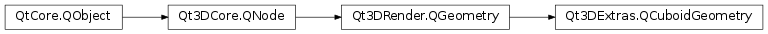

Qt3DExtras.QCuboidGeometry¶
Synopsis¶
Functions¶
- def
indexAttribute() - def
normalAttribute() - def
positionAttribute() - def
tangentAttribute() - def
texCoordAttribute() - def
updateIndices() - def
updateVertices() - def
xExtent() - def
xyMeshResolution() - def
xzMeshResolution() - def
yExtent() - def
yzMeshResolution() - def
zExtent()
Slots¶
- def
setXExtent(xExtent) - def
setXYMeshResolution(resolution) - def
setXZMeshResolution(resolution) - def
setYExtent(yExtent) - def
setYZMeshResolution(resolution) - def
setZExtent(zExtent)
Signals¶
- def
xExtentChanged(xExtent) - def
xyMeshResolutionChanged(xyMeshResolution) - def
xzMeshResolutionChanged(xzMeshResolution) - def
yExtentChanged(yExtent) - def
yzMeshResolutionChanged(yzMeshResolution) - def
zExtentChanged(zExtent)
Detailed Description¶
* * * *
The
QCuboidGeometryclass allows creation of a cuboid in 3D space. * * * * * TheQCuboidGeometryclass is most commonly used internally by theQCuboidMesh* but can also be used in customQt3DRender.QGeometryRenderersubclasses.
-
class
PySide2.Qt3DExtras.Qt3DExtras.QCuboidGeometry([parent=nullptr])¶ Parameters: parent – PySide2.Qt3DCore.Qt3DCore::QNodeConstructs a new
QCuboidGeometrywithparent.
-
PySide2.Qt3DExtras.Qt3DExtras.QCuboidGeometry.indexAttribute()¶ Return type: PySide2.Qt3DRender.Qt3DRender::QAttribute
-
PySide2.Qt3DExtras.Qt3DExtras.QCuboidGeometry.normalAttribute()¶ Return type: PySide2.Qt3DRender.Qt3DRender::QAttribute
-
PySide2.Qt3DExtras.Qt3DExtras.QCuboidGeometry.positionAttribute()¶ Return type: PySide2.Qt3DRender.Qt3DRender::QAttribute
-
PySide2.Qt3DExtras.Qt3DExtras.QCuboidGeometry.setXExtent(xExtent)¶ Parameters: xExtent – PySide2.QtCore.floatSee also
PySide2.Qt3DExtras.Qt3DExtras::QCuboidGeometry.xExtent()
-
PySide2.Qt3DExtras.Qt3DExtras.QCuboidGeometry.setXYMeshResolution(resolution)¶ Parameters: resolution – PySide2.QtCore.QSize
-
PySide2.Qt3DExtras.Qt3DExtras.QCuboidGeometry.setXZMeshResolution(resolution)¶ Parameters: resolution – PySide2.QtCore.QSize
-
PySide2.Qt3DExtras.Qt3DExtras.QCuboidGeometry.setYExtent(yExtent)¶ Parameters: yExtent – PySide2.QtCore.floatSee also
PySide2.Qt3DExtras.Qt3DExtras::QCuboidGeometry.yExtent()
-
PySide2.Qt3DExtras.Qt3DExtras.QCuboidGeometry.setYZMeshResolution(resolution)¶ Parameters: resolution – PySide2.QtCore.QSize
-
PySide2.Qt3DExtras.Qt3DExtras.QCuboidGeometry.setZExtent(zExtent)¶ Parameters: zExtent – PySide2.QtCore.floatSee also
PySide2.Qt3DExtras.Qt3DExtras::QCuboidGeometry.zExtent()
-
PySide2.Qt3DExtras.Qt3DExtras.QCuboidGeometry.tangentAttribute()¶ Return type: PySide2.Qt3DRender.Qt3DRender::QAttribute
-
PySide2.Qt3DExtras.Qt3DExtras.QCuboidGeometry.texCoordAttribute()¶ Return type: PySide2.Qt3DRender.Qt3DRender::QAttribute
-
PySide2.Qt3DExtras.Qt3DExtras.QCuboidGeometry.updateIndices()¶ Updates indices based on mesh resolutions.
-
PySide2.Qt3DExtras.Qt3DExtras.QCuboidGeometry.updateVertices()¶ Updates vertices based on mesh resolutions.
-
PySide2.Qt3DExtras.Qt3DExtras.QCuboidGeometry.xExtent()¶ Return type: PySide2.QtCore.floatSee also
PySide2.Qt3DExtras.Qt3DExtras::QCuboidGeometry.setXExtent()
-
PySide2.Qt3DExtras.Qt3DExtras.QCuboidGeometry.xExtentChanged(xExtent)¶ Parameters: xExtent – PySide2.QtCore.float
-
PySide2.Qt3DExtras.Qt3DExtras.QCuboidGeometry.xyMeshResolution()¶ Return type: PySide2.QtCore.QSize
-
PySide2.Qt3DExtras.Qt3DExtras.QCuboidGeometry.xyMeshResolutionChanged(xyMeshResolution)¶ Parameters: xyMeshResolution – PySide2.QtCore.QSize
-
PySide2.Qt3DExtras.Qt3DExtras.QCuboidGeometry.xzMeshResolution()¶ Return type: PySide2.QtCore.QSize
-
PySide2.Qt3DExtras.Qt3DExtras.QCuboidGeometry.xzMeshResolutionChanged(xzMeshResolution)¶ Parameters: xzMeshResolution – PySide2.QtCore.QSize
-
PySide2.Qt3DExtras.Qt3DExtras.QCuboidGeometry.yExtent()¶ Return type: PySide2.QtCore.floatSee also
PySide2.Qt3DExtras.Qt3DExtras::QCuboidGeometry.setYExtent()
-
PySide2.Qt3DExtras.Qt3DExtras.QCuboidGeometry.yExtentChanged(yExtent)¶ Parameters: yExtent – PySide2.QtCore.float
-
PySide2.Qt3DExtras.Qt3DExtras.QCuboidGeometry.yzMeshResolution()¶ Return type: PySide2.QtCore.QSize
-
PySide2.Qt3DExtras.Qt3DExtras.QCuboidGeometry.yzMeshResolutionChanged(yzMeshResolution)¶ Parameters: yzMeshResolution – PySide2.QtCore.QSize
-
PySide2.Qt3DExtras.Qt3DExtras.QCuboidGeometry.zExtent()¶ Return type: PySide2.QtCore.floatSee also
PySide2.Qt3DExtras.Qt3DExtras::QCuboidGeometry.setZExtent()
-
PySide2.Qt3DExtras.Qt3DExtras.QCuboidGeometry.zExtentChanged(zExtent)¶ Parameters: zExtent – PySide2.QtCore.float
© 2018 The Qt Company Ltd. Documentation contributions included herein are the copyrights of their respective owners. The documentation provided herein is licensed under the terms of the GNU Free Documentation License version 1.3 as published by the Free Software Foundation. Qt and respective logos are trademarks of The Qt Company Ltd. in Finland and/or other countries worldwide. All other trademarks are property of their respective owners.